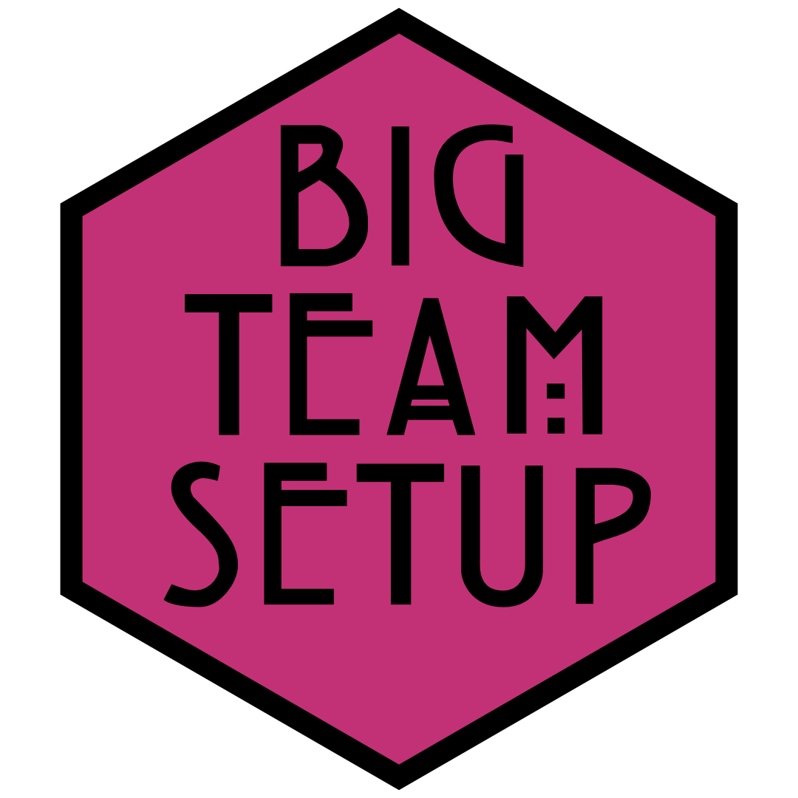

Big Team Setup

Overview
This guide is one of the “talks” for ABRIR’s workshop series: Increased Representation: A Vision for Inclusive Big-team Science. The author, Lisa DeBruine, will be available to answer questions asynchronously on the workshop Slack during the conference, 22-24 September 2022.
This guide is aimed at people wanting to start a big team science group from the grassroots, with little or no financial or administrative support. It will cover the organisational aspects of how you recruit members, set up governance, communicate with the team, set up and use social media accounts, use tools for collaboration, and set up a website.
Remember that this is only one perspective. My qualifications for giving advice are being a founding member and current Associate Director of the Psychological Science Accelerator, the founder of ManyFaces, organiser of the Code Check Club, and having previously been the web and communications officer for the Human Behavior and Evolution Society and the European Human Behaviour and Evolution Association. I’ve had the enormous privileges of being a first-language English speaker at a supportive, well-funded, research intensive university in Scotland. I hope that this guide can be the start of a more extensive guide with more voices and perspectives.
Esta guía es una de las “charlas” de la serie de talleres de ABRIR: Mayor representacion: Una Visión para la Ciencia Inclusiva de Grandes Equipos. La autora, Lisa DeBruine, estará disponible para responder preguntas de forma asíncrona en el taller de Slack durante la conferencia, del 22 al 24 de septiembre de 2022.
Esta guía está dirigida a personas que deseen iniciar equipos de ciencia colaborativa (Big-Team) desde las bases, con poco o ningún apoyo financiero o administrativo. Se cubirán los aspectos organizativos de cómo reclutar miembros, configurar la gobernanza, comunicarse con el equipo, configurar y utilizar cuentas de redes sociales, utilizar herramientas de colaboración y crear un sitio web.
Recuerde que esta es solo una perspectiva. Mis cualificaciones para dar consejos son ser miembro fundadora y actual Directora Asociada del Psychological Science Accelerator, fundadora de ManyFaces, organizadora del Code Check Club, y habiendo sido anteriormente responsable de las p·ginas web y comunicaciones de Human Behavior and Evolution Society y de European Human Behavior and Evolution Association. He tenido el enorme privilegio de ser hablante de inglés como primer idioma en una universidad intensiva en investigación, bien financiada y solidaria en Escocia. Espero que esta guía pueda ser el comienzo para una guía más extensa con más voces y perspectivas.
Bu kılavuz, ABRIR’in atölye serisi için yapılan “konuşmalardan” biridir: Artan Temsil: Kapsayıcı Büyük Ekip Bilimine Vizyoner Bir Bakış. Yazar, Lisa DeBruine, 22-24 Eylül 2022 tarihleri arasında konferans kapsamındaki asenkron atölyeler esnasında senkron olarak soruları cevaplamak için Slack uygulamasında ulaşılabilir durumda olacaktır.
Bu kılavuz, çok az veya hiç finansal ya da kurumsal desteği olmayan ve büyük ekip bilimi grupları oluşturmak isteyen kişileri hedeflemektedir. Kılavuz, üyelerin nasıl dahil edileceğinin, nasıl denetim kurulacağının, takımla nasıl iletişim kurulacağının, sosyal medya hesaplarının nasıl oluşturulacağının ve kullanılacağının, iş birliği için araçların nasıl kullanılacağının ve bir web sayfasının nasıl oluşturulacağının organizasyonel taraflarını ele alacaktır.
Unutmayınız ki bu sadece tek bir bakış açısıdır. Yavsiye vermek için dayanabileceğim yeterliklerim Psychological Science Accelerator’ın kurucu üyesi ve mevcut yönetici yardımcısı olmak, ManyFaces’in kurucusu olmak, Code Check Club’ın düzenleyicisi olmak ve İnsan Davranışı ve Evrim Topluluğu ile Avrupa İnsan Davranışı ve Evrim Derneği’nin web ve iletişimden sorumlu yetkisi deneyimlerine sahip olmaktır. İskoçya’da destekleyici, iyi finanse edilen, araştırma-yoğunluklu bir üniversitede ana dili İngilizce olan biri olmanın muazzam ayrıcalıklarına sahip oldum. Umarım bu kılavuz daha fazla sese ve bakış açısına sahip daha kapsamlı bir kılavuzun başlangıcı olabilir.